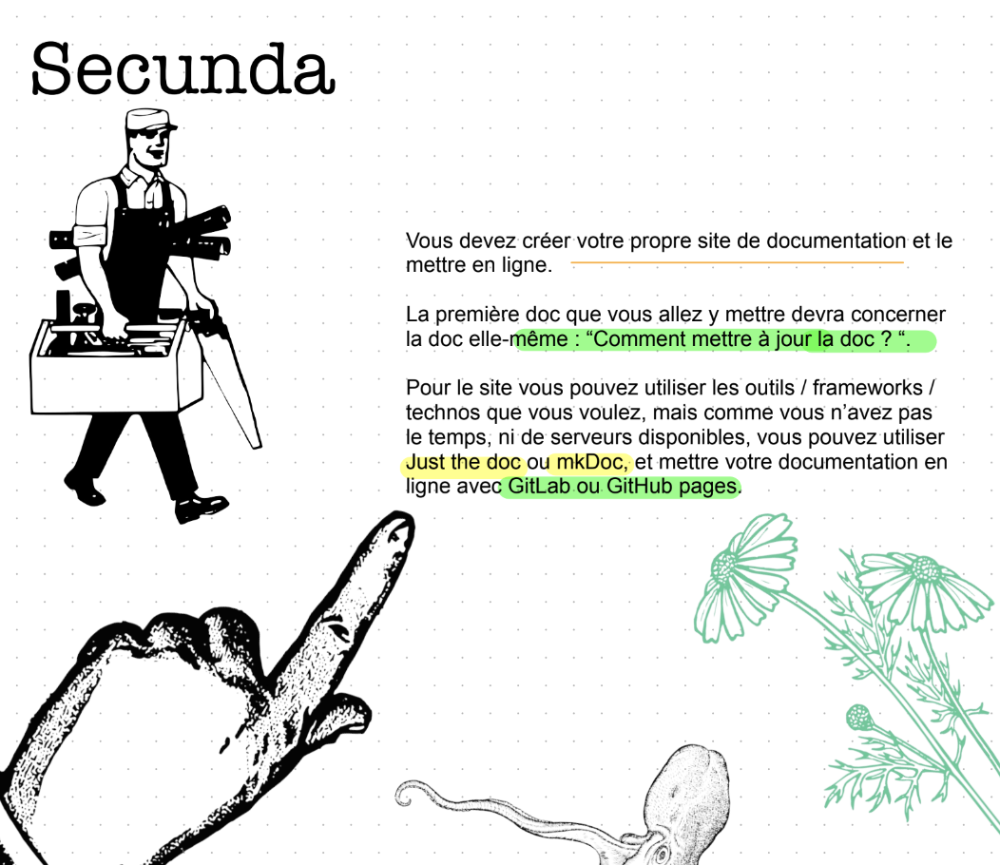

Comment créer un site de documentation avec Mkdocs ?
- télécharger Mkdocs avec la commande
pip install mkdocs - J'avais pas pip donc je l'ai telechargé avec
curl https://bootstrap.pypa.io/get-pip.py -o get-pip.pyet installé viapython3 get-pip.py - Après avoir installé Mkdocs ,j'ai suivi à la lettre la documentation de mkdocs accessible ici : Mkdocs - Getting started
- Je me suis amusée à changer le thème en choisissant le thème
Dracula: Documentatin ici
Comment déployer un site de documentation Mkdocs avec Github ?
- Pousser le repo en local vers le repo distant Github
- Se mettre sur la branche Main du repo
- déployer avec la commande
mkdocs gh-deploy
Repository du site mkdocs
Comment créer un site de documentation avec Github Pages ?
- Créer repo sur github et le cloner sur mon bureau ( dans mon cas je l’ai appelé mon_site_de_docu)
- Y accéder via ma ligne de commande ( terminal) : cd nom de votre repo (dans mon cas c'éatit cd mon_site_de_docu)
- Créer un fichier index.md ( mon fichier de markdown) :
nano index.md - mettre notre documentation en Markdown (Titres avec Hashtags, texte sans les hashtags etc )
- Pour enregistrer le fichier et quitter :
ctrl o,entrer,ctrl x - Pour configurer le site, créer un fichier YAML avec la commande :
nano _config.yaml( Lien Utile :https://quire.getty.edu/docs-v1/fundamentals/) - Étpae 5
- Ensuite, suivre les étapes pour pousser notre travail vers le repo distant :
git add .git commit -m "votre message de commit"git push - Sur votre profil Github, dans votre repo de doc : Aller dans
settings > Pages - Déployer le site
Comment mettre à jour la documentation ?
Pour mettre à jour la documentation, suivez les étapes ci-dessous :
- Ouvrez le dossier
mon-site-de-docude votre projet. - Modifiez le fichier Markdown
index.mdcorrespondant à la documentation. - Enregistrez vos modifications:
git add .git commit -m "votre message de commit" - Poussez les changements vers le dépôt distant:
git push